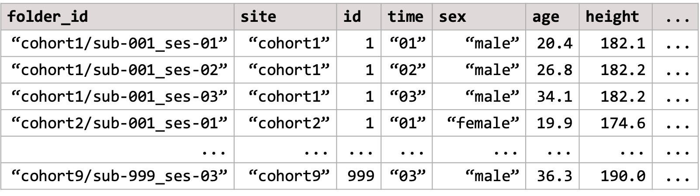

Get ready - step 2: preparing your data
Serena Defina
2026-02-05
Source:vignettes/articles/01-format-data.Rmd
01-format-data.RmdThe verywise package was specifically developed to
handle complex datasets, with multiple
cohorts/sites/scanners as well as repeated neuro-imaging
measures. In order to run such bussin analyses however, you will
need to prepare two data inputs:
- The brain surface files (i.e. Freesurfer output files)
- The phenotype data: a dataset containing exposures, covariates, identifiers, etc.
In this article we describe how the software expects the input data directory to look like, and what pre-processing steps are necessary to get both your neuro-imaging data and your phenotype data ready for analysis.
Overview: a verywise input directory structure
Here is an example of a typical verywise input
directory:
This is also what you will see if you use our data simulation functions (see tutorial here). Note: the phenotype file does not need to be inside the same folder as the neuroimaging data, but we placed it in there to keep things tidy.
If you have more than one neuroimaging “site” (or “cohort” or
dataset, however you want to call it), then each site should
have it’s own folder. Inside each site folder you should have
one sub-folder for each individual measurement (or “session”). These
sub-folders should follow the BIDS convention, so for
example: sub-47_ses-03 will have the 3rd measurement of
subject #47. Inside each sub-folder verywise expects to
find (at a minimum) a “surf” directory, where the FreeSurfer output for
that subject-session is stored.
If you have run FreeSurfer correctly (see next section), this should be already all set up for you.
Preparing your brain data
To obtain the brain surface data, you should first run your structural MRI data files through FreeSurfer’s cortical reconstruction process. In a nutshell, this can be done using the command:
Which should take about 10 minutes per subject. Don’t forget the
-qcache flag!
Full instructions can be found here. See also this very useful tutorial.
The recon-all pipeline essentially transforms your “3D”
T1-weighted MRI volumes into 2D surface models
made up of vertices and mapped onto a specific template
(usually, fsaverage). At each vertex on this surface a
number of “local” anatomical metrics are also
calculated. These measures typically include: cortical thickness,
surface area, curvature, sulcal depth / convexity, volume and
gyrification index.
The output folder should now look similar to the one you have seen
above. Inside each subject-session sub-folder you should be able to find
a “surf” directory where these brain surface maps are saved as
.mgh files (for each hemisphere and measure
separately).
These are the files we will be using for our analysis.
Preparing your phenotype data
So the brain surface data is (pretty much all) sorted by running FreeSurfer, but you will also need to prepare a “phenotype” dataset where to store any other variable of interest (i.e. the exposures and covariates).
In verywise, we expect the phenotype data to be some
kind of tabular data structure (e.g. a data.frame, a
tibble or a multiple imputation dataset) where each row
corresponds to a specific observation (aka, a subject-session
measurement), and each column corresponds to a variable (e.g. age, sex,
site, diagnosis, etc.).
The phenotype data can be either stored in a file (supported file
types: .rds, .csv, .sav,
.txt), or it can be an object loaded in memory.
Either way, it should it should look something like this:

Some important characteristics of the phenotype data that we need to point out, so we can remain friends:
Long format data
The phenotype data should be in the “long format” with different timepoints/sites/groups stacked row-wise. Each row in the data should correspond to a single data point, or a specific observation (for example, a subject-session measurement). This is a typical structure used for longitudinal data analysis.
If necessary, you can convert your data from “wide” to long format
using a variety of functions. E.g. the tidyr package offers
pivot_longer(),
though I tend to prefer stats::reshape().
Essential columns and naming conventions
The phenotype data content will vary, of course, depending on what variables are of interest / needed in your analysis.
The only requirement is that the phenotype must always include a
folder ID column (by default, this is expected to be
called folder_id). This column is important because it
speficies link between the phenotype data to the (correct) brain surface
data file. It should contain the relative path to the
subject-session sub-folders inside your neuroimaging data directory (or
subj_dir).
For example, if your repeated measurement analysis includes only one
site, the folder_id column could look like
"sub-001_ses-baseline", "sub-001_ses-F1", "sub-002_ses-baseline"....
If multiple sites are included, and they are all stored inside the
same main subj_dir folder, then the folder_id
column could look like
"site1/sub-001_ses-baseline", "site1/sub-001_ses-F1", "site2/sub-001_ses-baseline"....
This principle also generalies to messier data folder structures
(though they are not recommended, for obvious reasons):
e.g. "path/to/site1/sub-001_ses-baseline", "path/to/site1/sub-001_ses-F1", "other_/path/to/site2/sub-001_ses-baseline"...
Note that no duplicates or missing values are allowed in the
folder_id column.
Multiple imputation support
Now something fairly dope: the phenotype data object can also be an imputed dataset.
verywise supports several of the most common multiple
imputation data formats in R, including the outputs of
mice, mi, Amelia, and
missForest. This can also simply be a list of
data.frames, where each data.frame corresponds to a single imputed
dataset.
Note that each dataset in the set must have identical dimentions, and
contain all the required columns (including the
folder_id).
When using imputed data, verywise will automatically run
the vertex-wise analysis on each imputed dataset separately, and then
pool the results together using Rubin’s rules.
Optional read: Simulate data for
verywise
Next article: Run a vertex-wise linear mixed model